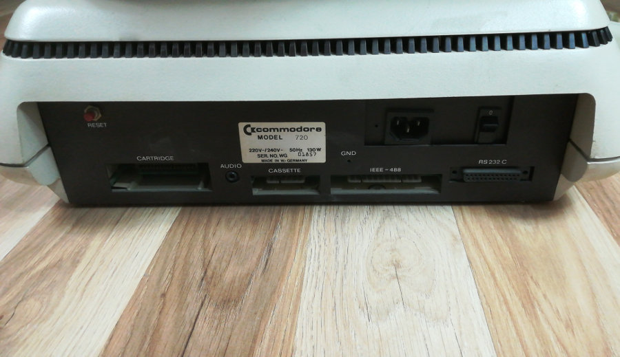
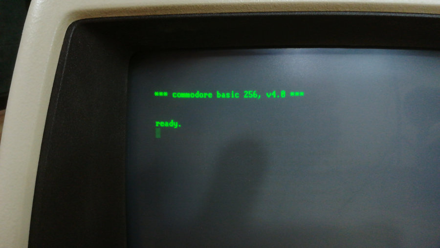
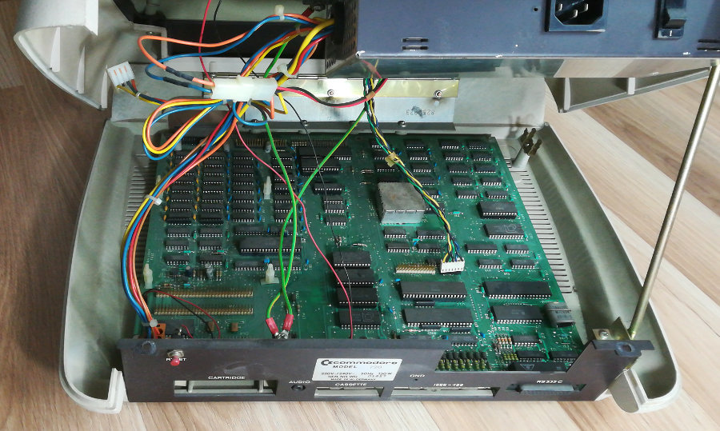
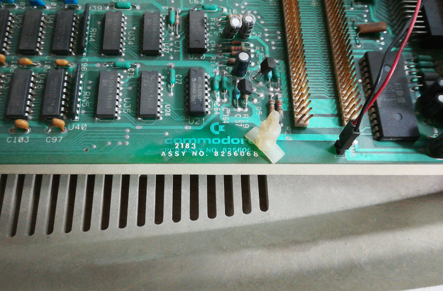

CBM 720
Der Commodore 720, der wie der CBM 610 ein Nachfolger der 8000er-Serie war, unterscheidet sich äußerlich nur geringfügig. Im Gegensatz zum CBM 610 besaß er aber einen Monitor. Der Arbeitsspeicher war mit 256 KB recht groß. Das Basic in der Version 4 wurde angepasst, um mit der Größe des Speichers zurechtzukommen. Wie im C64, war für die Ton-Wiedergabe ein SID 6581 zuständig. Leider wurde die Produktion sehr früh eingestellt da sich diese Serie sehr schlecht verkaufte.